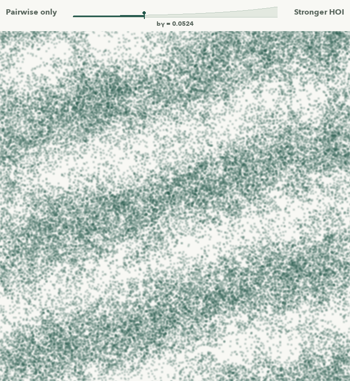

Theoretical physicist
David
Pinto Ramos
Postdoctoral researcher · CASUS–HZDR
Dynamics of Complex Living Systems · Görlitz, Germany
I am a theoretical physicist working on nonlinear dynamics and pattern formation. I study how broken symmetries and interactions shape collective behaviour in spatially extended systems, from coupled oscillators to plant populations.
My work combines bifurcation and stability analysis with simulations of continuum and individual-based models, with dryland ecosystems as a principal application.

Background
Academic journey
- 2024–present
Postdoctoral researcher
CASUS–HZDR · Görlitz, Germany
- 2021
Visiting researcher
Université libre de Bruxelles · Belgium
- 2019–2023
Doctor of Science in Physics
Universidad de Chile · Chile
- 2015–2018
Bachelor of Science in Physics
Universidad de Chile · Chile
Teaching & supervision
I was a teaching assistant in physics and mathematics at Universidad de Chile from 2017 to 2022. I have supervised undergraduate and Master’s-level research projects in nonlinear dynamics and pattern formation.
Selected recognition
MSCA Seal of Excellence for the RealVegPACE proposal (2025).
Outstanding PhD Thesis Award, Faculty of Physical and Mathematical Sciences, Universidad de Chile (2024).
Publications
Selected work
Curriculum vitae
CV
Research
Research & simulations
Explore how interactions and broken symmetries shape waves, fluctuations and ecological patterns.
Explore the research
Find me
Görlitz, Germany
Dynamics of Complex Living SystemsCenter for Advanced Systems UnderstandingHelmholtz-Zentrum Dresden-RossendorfVisitors